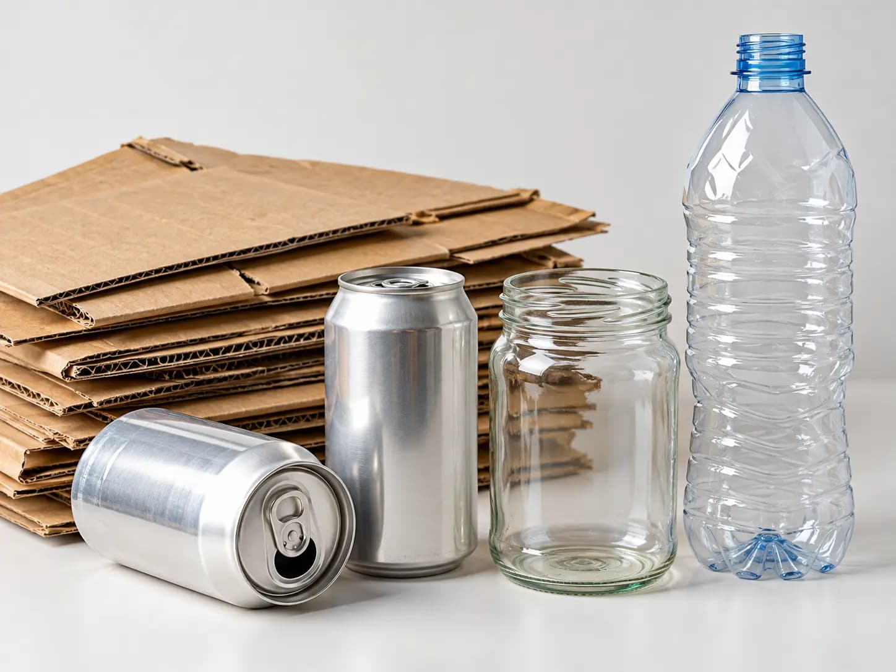
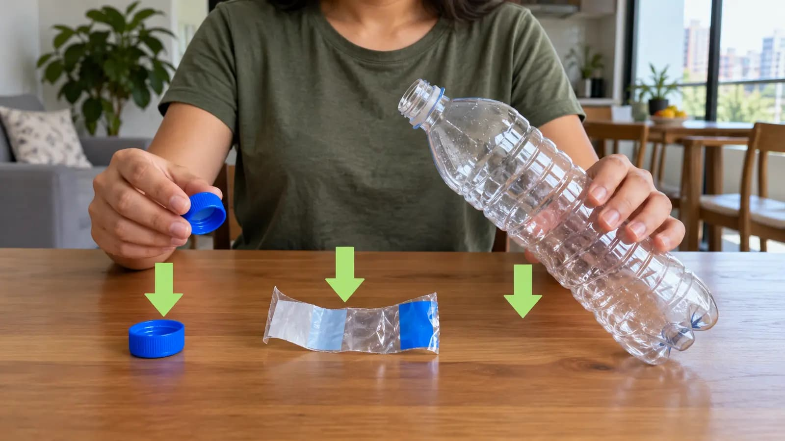
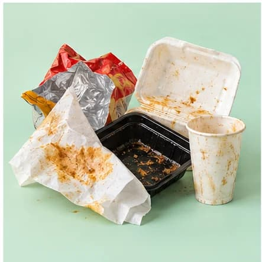
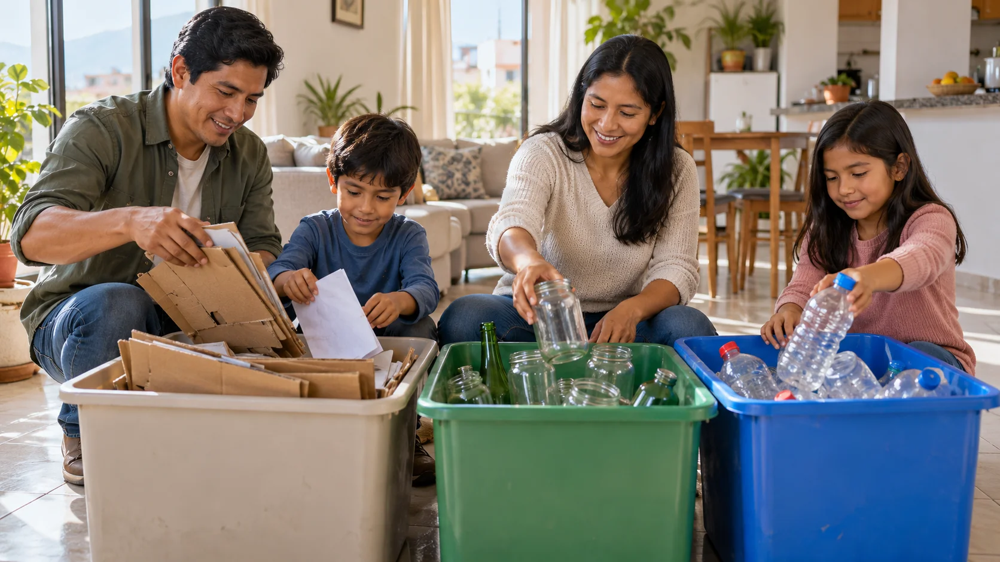

1. Vacío, enjuagado y seco
Sin restos de gaseosa, jugos ni agua estancada. Una enjuagada rápida con poca agua y secado al aire garantizan que no genere malos olores ni hongos.

Criterios de aceptacion
Compara las condiciones correctas y las causas frecuentes de rechazo para asegurar que tu botella plástica sea admitida en cualquier centro de acopio de Lima.

Sin restos de gaseosa, jugos ni agua estancada. Una enjuagada rápida con poca agua y secado al aire garantizan que no genere malos olores ni hongos.

Desenrosca la tapa plástica antes de entregar. Las tapas están hechas de polipropileno (PP) y pueden donarse a campañas solidarias o reciclarse por separado.

Botellas con líquidos fermentados o grasa en el fondo son rechazadas porque contaminan toda la tolva de reciclaje y arruinan cartones o papeles secos.

Envases que contuvieron sustancias peligrosas (lejía, thinner, insecticidas o gasolina) no deben ir al tacho verde por riesgo de intoxicación a los operarios.
Diferencia rápidamente los plásticos aprovechables de los plásticos comunes no reciclables antes de clasificarlos en casa.
Plástico transparente o celeste, flexible al tacto y con el triángulo de reciclaje #1 en la base.
Destino recomendado: Tacho Verde, punto limpio o reciclador de base.
Aunque suele ser de plástico transparente, el aceite impregna las paredes del envase e inutiliza el proceso estándar de molienda si no está desengrasado.
Destino recomendado: Lavar profundamente con detergente o entregar a puntos de acopio de aceite usado.
Hechos de poliestireno (PS #6) o polipropileno frágil. No cuentan con cadena de reciclaje activa en Lima por su baja densidad y alto costo de recuperación.
Destino recomendado: Tacho Negro (Residuos no aprovechables).
Aprende el método correcto de enjuague, secado, separación de tapa y compactación en nuestra guía interactiva paso a paso.